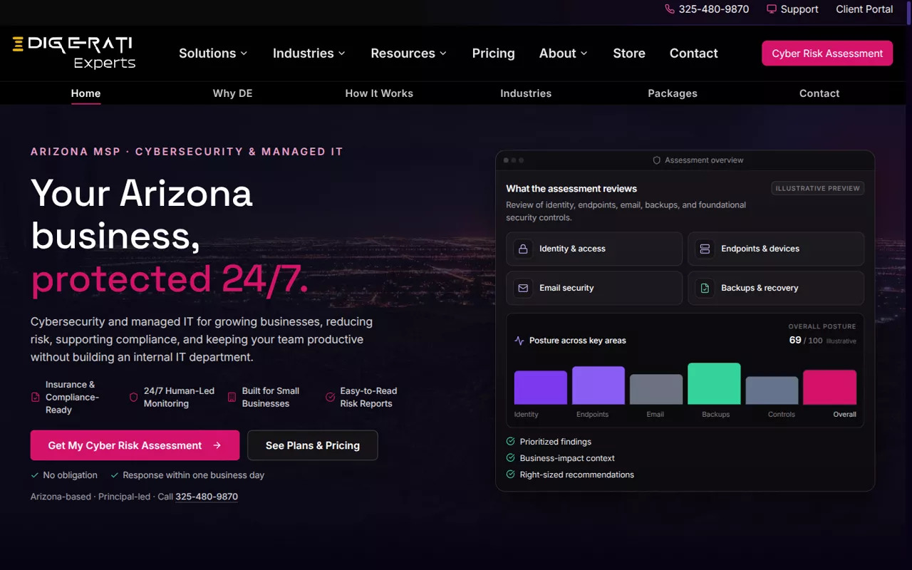
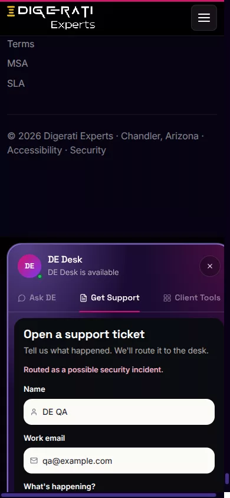

Business systems
CRM, finance, service desk, collaboration. The software the company actually runs on, treated as infrastructure, not as somebody else's problem.
Digerati Experts
Chandler, Arizona
Digerati Experts designs, secures, integrates, and operates the technology a business runs on. Not as twenty products. As one environment.
A reading in nine chapters
A working company accumulates systems the way a desk accumulates paper. Each one arrived for a good reason.
Each one works.
The environment doesn't.
Then the environment wakes up
DE enters. Not as a giant logo. As an architectural layer.
Identity becomes one spine, and access follows it everywhere.
Security stops being a product you bought. It becomes a property of the whole.
Data starts moving. Automation starts working. People keep the approvals.
Fourteen disciplines. One operating environment.
Nobody wakes up wanting a firewall. They want the company protected, the team productive, the busywork gone, the auditor satisfied.
Choose an outcome. Watch the map answer.
Same environment every time. Different parts doing the work.
The ProActive Ecosystem is not a bundle of tools. It is the cadence DE runs an environment on: designed before it is defended, monitored before it breaks, measured so the roadmap is a plan and not a guess.
Security lives inside that cadence, not beside it. Identity, devices, email, network, cloud, data, and the people using them form one security surface, reviewed as one. Antivirus is a purchase. This is a posture.
ProActive depths · published starting rates
Depths are a fit, not a ranking. The fit conversation is the real product: see plans and pricing.
The stack above the laptops is still technology. DE works there too.
CRM, finance, service desk, collaboration. The software the company actually runs on, treated as infrastructure, not as somebody else's problem.
APIs, integrations, event-driven workflows. The work between systems is where whole days disappear, so that is where DE removes it.
Agents and applied AI where they earn their keep, with human approval kept visible. One domain of fourteen. Not the company.
Voice, messaging, meetings, and the infrastructure under them, run as part of the environment instead of a separate bill.
Hardware, software, licensing, procurement. Outcomes first, products second, and the vendors never become the hero.
No borrowed Fortune 500 stories. These are DE's own surfaces, running in production today.

Every engagement starts by reading the environment: identity, endpoints, email, backups, and the controls around them, returned as findings a business owner can act on.

DE Desk, the client portal, the store with its solution builder: interfaces DE engineered and operates, not white-labeled panels with a logo swapped in.
The bench behind the work includes Pax8, Sophos, Huntress, SonicWall, ThreatLocker, Zoho, Lenovo, TD SYNNEX, and more than forty other vendors DE manages so clients never have to.
Client case studies exist and are waiting on one thing DE will not skip: the client's written permission. Until then, this page makes no borrowed claims.

Principal-led means the person who scoped your environment is the person who answers for it. No account manager between you and the responsibility.
3165 S Alma School Rd, Suite 29, Chandler, AZ 85248Start where DE starts with every client: Get My Cyber Risk Assessment.
Or take the quieter doors: solutions, the store, client support.